The Hopf Fibration
The Hopf fibration is a fiber bundle with a two-dimensional sphere as the base space and circles as the fiber space. It is the geometrical shape that relates Einstein's spacetime to quantum fields. In this model, we visualize the Hopf fibration by first computing its points via a bundle atlas and then rendering the points in 3D space via stereographic projection. The projection step is necessary because the Hopf fibration is embedded in a four-space. Yet, it has only three degrees of freedom as a three-dimensional shape. The idea that makes this model more special and interesting than a typical visualization is the idea of Planet Hopf, due to Dror Bar-Natan (2010). The basic idea is that since the Hopf map takes the three-dimensional sphere into the two-dimensional sphere, we can pull the skin of the globe back to the three-sphere and visualize it.
Into the bargain, the Earth rotates about its axis every 24 hours. That spinning transformation of the Earth, together with the non-trivial product space of the Hopf bundle, can be encoded naturally into a monolithic visualization. It also makes sense to visualize differential operators in the Minkowski space-time as vectors in a cross-section of the Hopf bundle and then study the properties of spin-transformations. The choice of a gauge transformation (or trivialization) along with Lorentz transformations of Minkowski spacetime should not have any effect on physical laws. It is therefore a great model to understand these transformations and walk the road to reality. The following explains how the source code for generating animations of the Hopf fibration works (alternative views of Planet Hopf). We follow the beginning of chapter 4 of Mark J.D. Hamilton (2018) for a formal definition of the Hopf fibration as a fiber bundle. The book Mathematical Gauge Theory explains the Standard Model to students of both mathematics and physics, covers both the specific gauge theory of the Standard Model and generalizations, and is highly accessible and self-contained. Then, the definitions are going to be used to explain the source code in terms of computational methods and types.
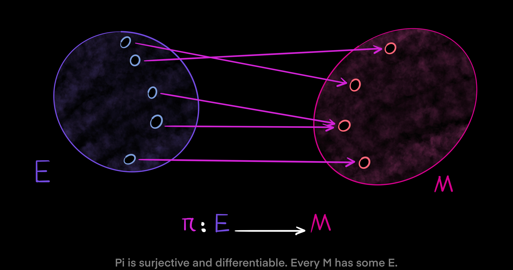 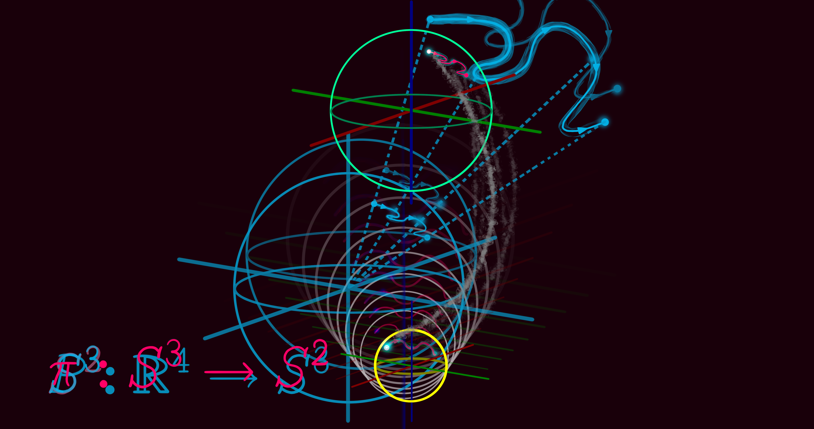 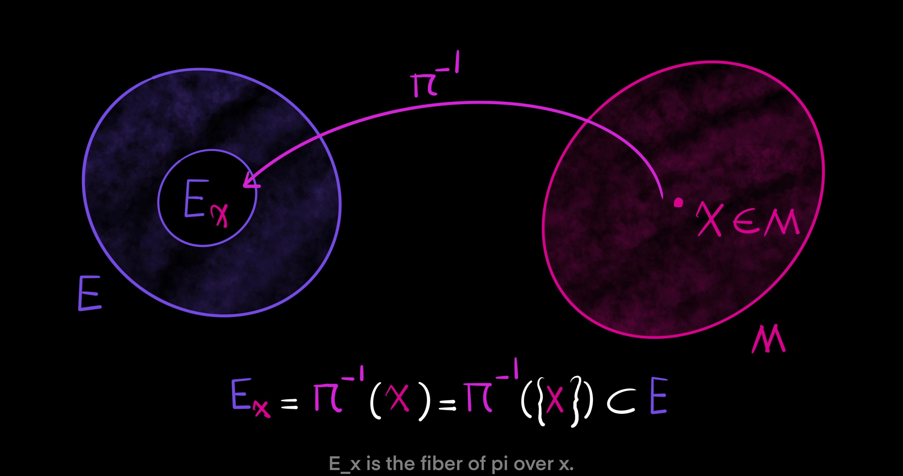
First, let $E$ and $M$ be smooth manifolds. Then, $\pi: E \to M$ is a surjective and differentiable map between smooth manifolds. Meaning, every element in $M$ has some corresponding element in $E$ via the map $\pi$. Now, let $x \in M$ be a point. A fiber of $\pi$ over point $x$ is called $E_x$ and defined as a non-empty subset of $E$ as follows: $E_x = \pi^{-1}(x) = \pi^{-1}(\{x\}) \subset E$. The singleton of $x$ is taken to the manifold $E$ by the inverse of the map $\pi$. However, to have a set of more than one point let $U$ be a subset of $M$, $U \subset M$. Then, we have $E_U = \pi^{-1}(U) \subset E$. In this case, $E_U$ is the part of $E$ above the subset $U$.
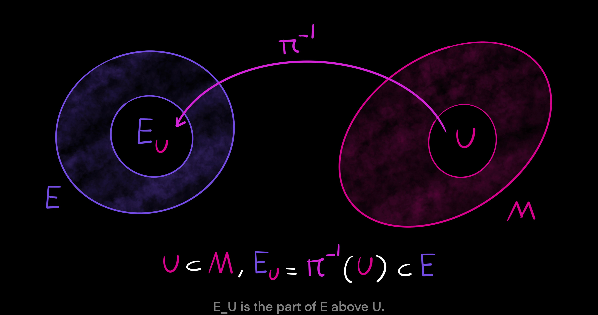 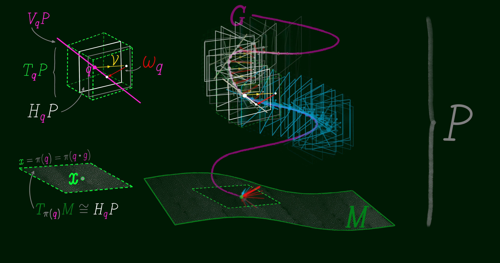 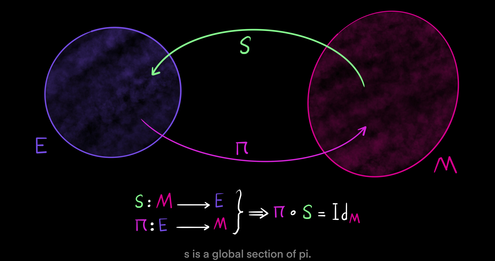
Next, define a global section of the map $\pi$ like this: $s: M \to E$. Considering the definition of $\pi: E \to M$, the definition of the global section implies that the composition of $\pi$ and $s$ is the identity map $\pi \ o \ s = Id_M$ over $M$. A section such as $s$ can be a local one if we take a subset of $M$ in the domain, $U \subset M$. Then, a local section is defined as $s: U \to E$. In a similar way the definition of the local section implies that its composition with $\pi$ is the idenity map over the subset: $\pi \ o \ s = Id_U$. For all points $x$ in subset $U$, the section $s(x)$ is in the fiber $E_x$ of $\pi$ above $x$, if and only if $s$ is a local section of $\pi$. In this pointwise case, the map $\pi$ is restricted to subset $U$. In other words $\pi: E \to U$, where $U \subset M$.
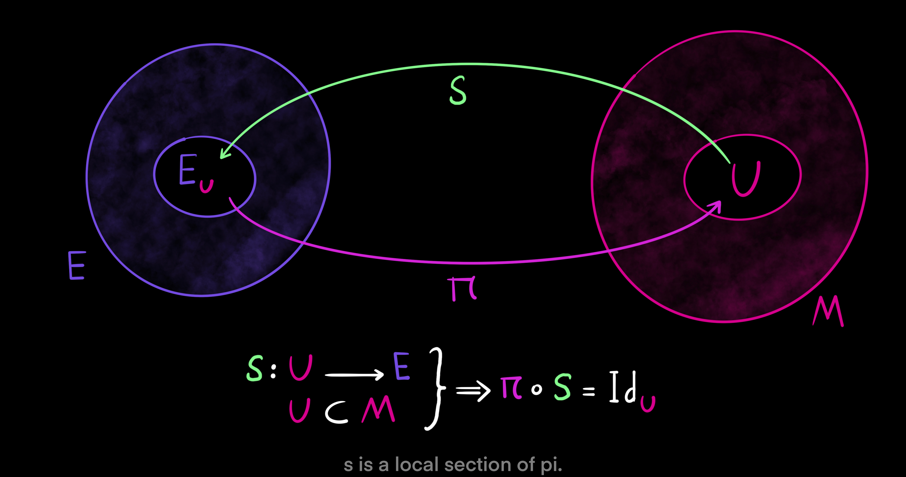 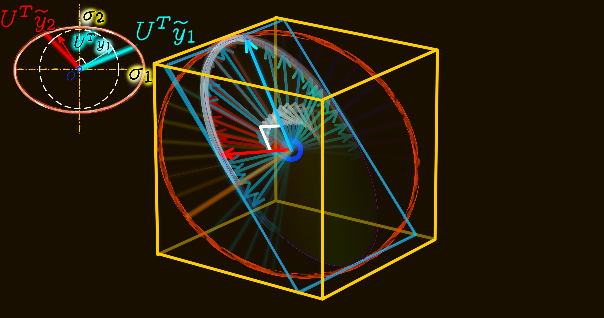 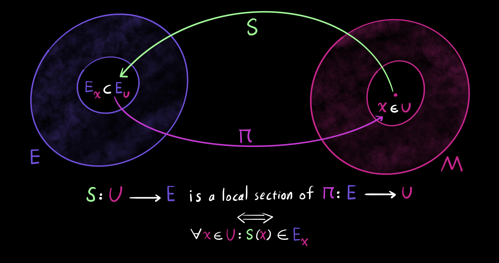
In general, for two points $x \not = y \in M$ that are not equal, the fibers $E_x$ and $E_y$ of $\pi$ over $x$ and $y$ may not be embedded submanifolds of $E$, or even be diffeomorphic. That means, there may not be a differentiable and invertible map that takes fiber $E_x$ into fiber $E_y$, and the tangent spaces of $E_x$ and $E_y$ over points $x$ and $y$ may not be naturally linear subspaces of the tangent space of $E$. But, it is different in the special instance where manifold $E = M \times F$ is the product of $M$ and the general fiber $F$ and $\pi$ as a map is the projection onto the first factor $\pi: M \times F \to M$. If that is the case, then fibers $E_x, E_y \in F$ of $\pi$ over the two distinct points $x \not = y \in M$ are embedded submanifolds of $E$ and diffeomorphic. To explain it more clearly, given that condition, there exists an invertible and smooth map taking one fiber to the other, and the tangent spaces of the fibers are directly summed with their respective dual subspaces at points in the fibers to span the whole tangent space of manifold $E$ at points of $\pi$ over $x$ and $y$. Therefore, fiber bundles are the generalization of products $E = M \times F$ as twisted products.
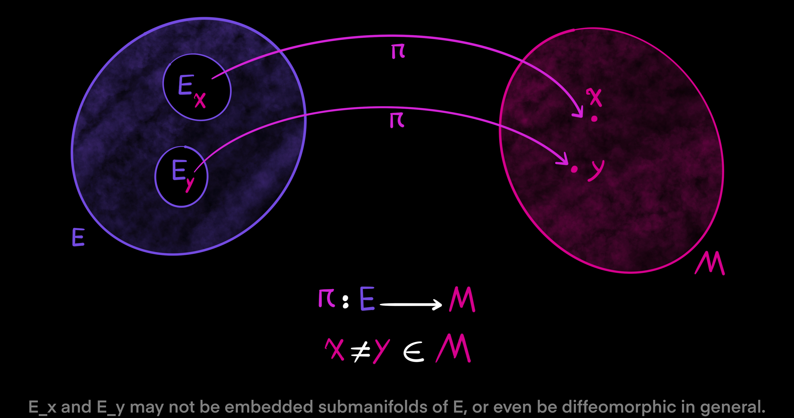 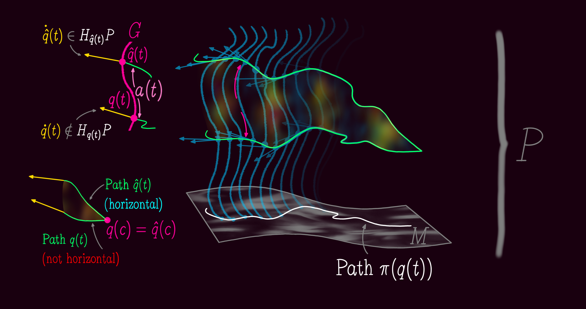 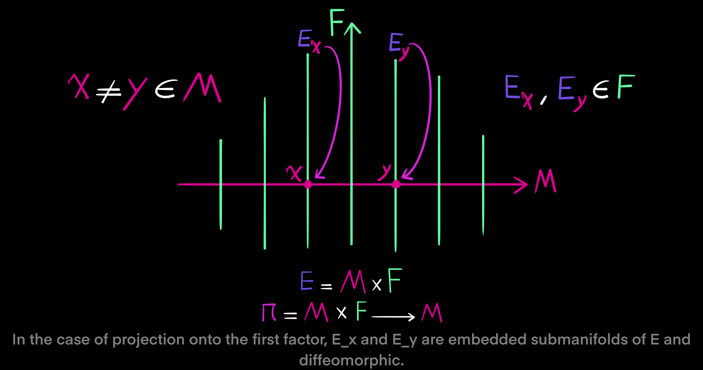
Before we define the Hopf action, first describe a scalar multiplication rule between vectors and numbers. Let $\R$ denote real numbers, $\Complex$ complex numbers, and $\mathbb{H}$ quaternionic numbers. On top of that, take a subset of these sets of numbers such that zero is not allowed to be in them, and denote the subsets as $\R^*$, $\Complex^*$, and $\mathbb{H}^*$ respectively. Now, define the linear right action by scalar multiplication for $\mathbb{K} = \mathbb{R}, \mathbb{C}, \mathbb{H}$ as the following: $\mathbb{K^{n+1}}\setminus\{0\} \times \mathbb{K}^* \to \mathbb{K}^{n+1}\setminus\{0\}$. For example, $5 \in \mathbb{R}^*$ is a non-zero scalar number, whereas $[1, 0, 0]^T \in \mathbb{R}^3\setminus\{0\}$ is a non-zero vector quantity. Per our definition, $5$ acts on $[1, 0, 0]^T$ on the right and yields $[5, 0, 0] \in \mathbb{R}^3\setminus\{0\}$ as another vector. This rule works the same for fields $\mathbb{K}$ even when the vectorial numbers are represented by matrices.
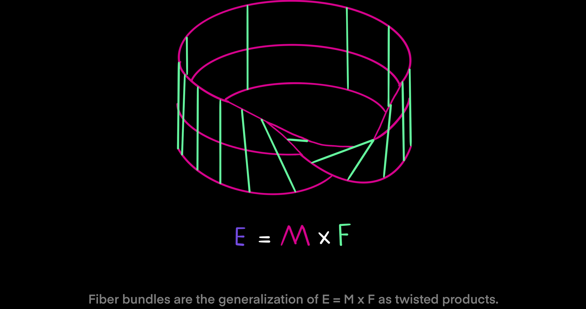 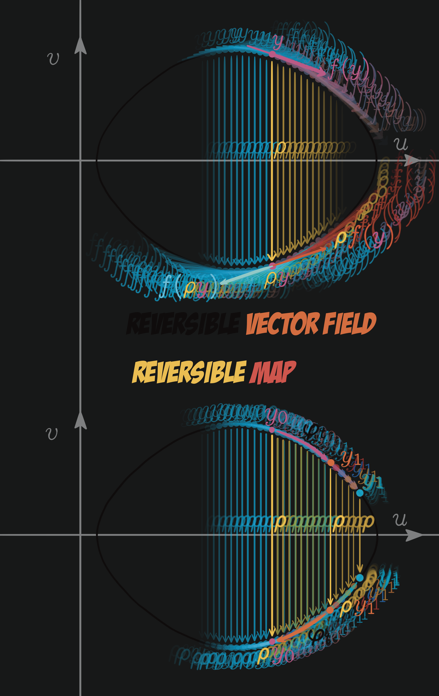 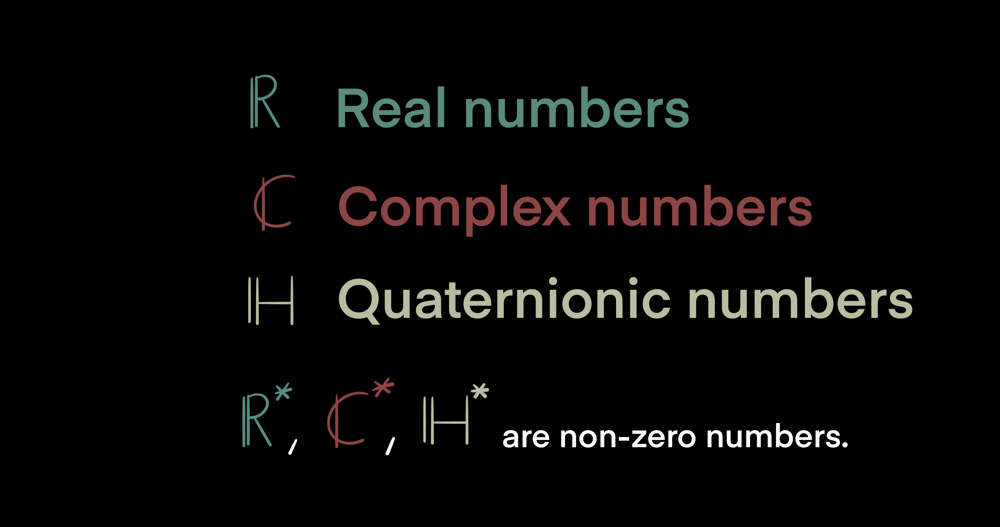
The linear right action by multiplication is called a free action, because for $x \in \mathbb{K}^{n+1}\setminus\{0\}$ and $y \in \mathbb{k}^*$ the multiplication $x \times y$ yields $x$ if and only if $y = Id$, as the identity element. For example, if we let $x = [0, 1, 0]^T, y = 1$, then the result of the scalar multiplication is $[0, 1, 0]^T \times 1 = [0, 1, 0]^T$.
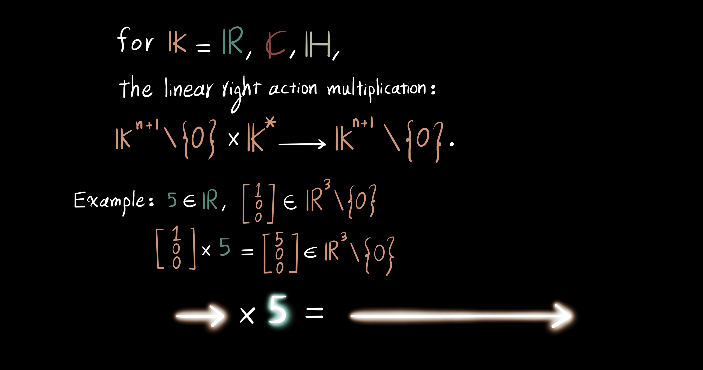 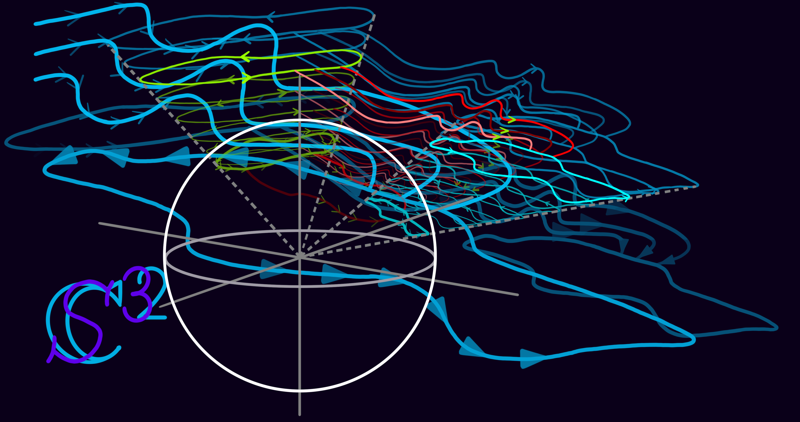 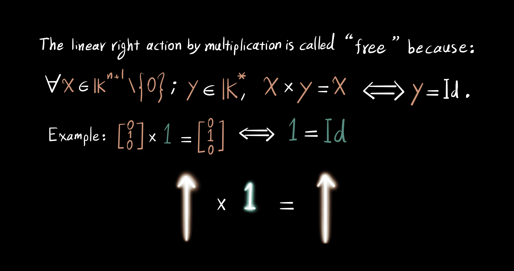
In addition, we define the unit n-sphere, for the Hopf action works on spheres. So, the unit sphere of dimension $n$ is defined as: $S^n:\{(w_1, w_2, ..., w_{n+1}) \in \mathbb{R}^{n+1} | \sum_{\substack{1 \leq i \leq n+1}}{w_i}^2 = 1\}$. As an example, the unit circle $S^1 \in \mathbb{C}$ is a one-dimensional sphere with $n = 1$, and ${w_1}^2 + {w_2}^2 = 1$, where $w_1$ and $w_2$ are the horizontal and vertical axes in the complex plane, respectively.
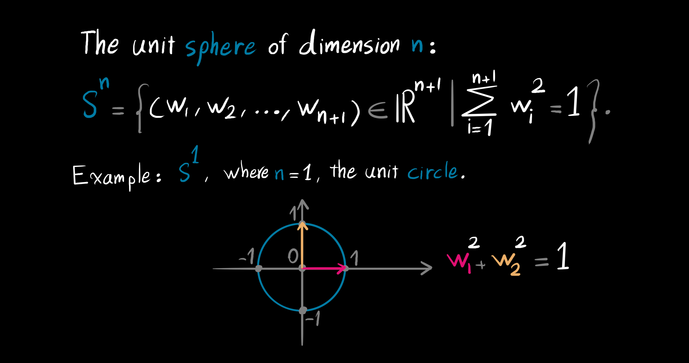 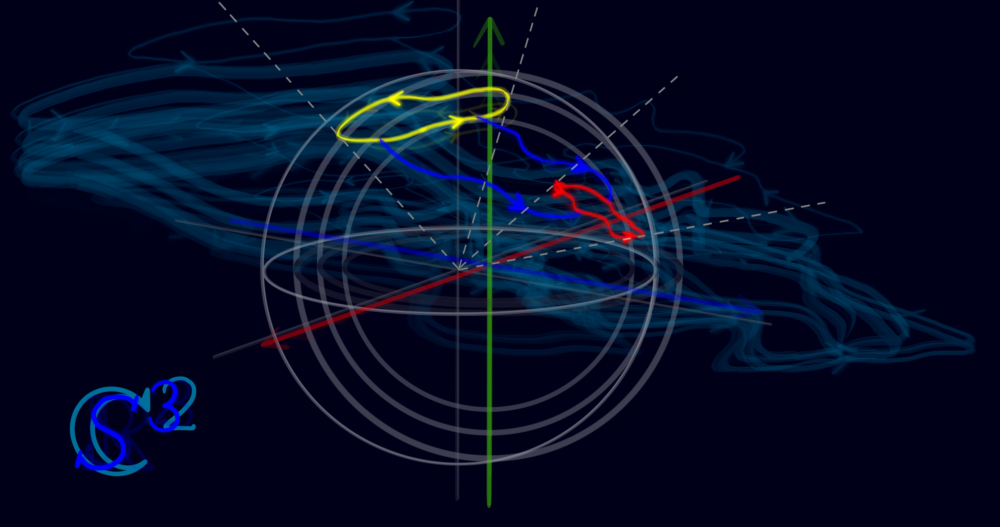 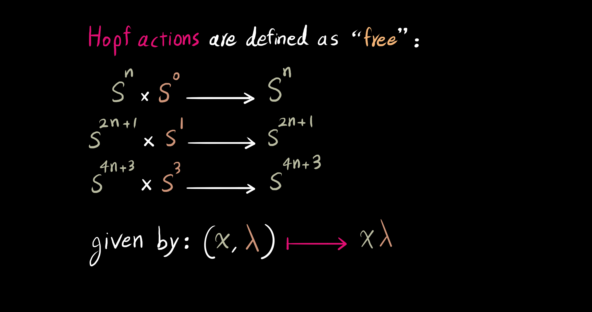
Now, Hopf actions are defined as free actions:
- $S^n \times S^0 \to S^n \\$
- $S^{2n+1} \times S^1 \to S^{2n+1} \\$
- $S^{4n+3} \times S^3 \to S^{4n+3} \\$
given by $(x, \lambda) \mapsto x\lambda$.
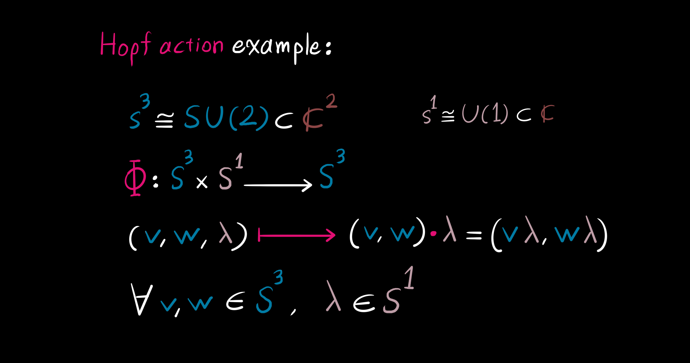 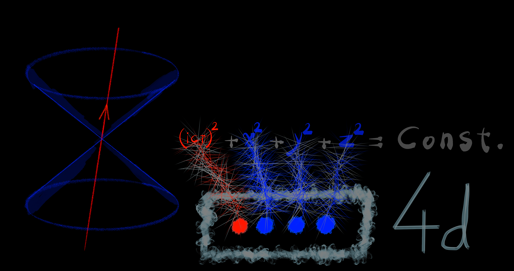 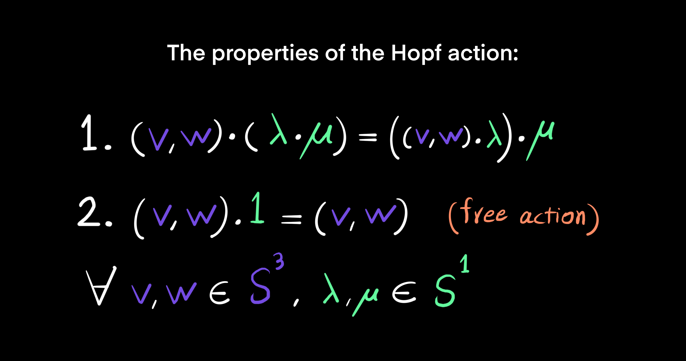
An example of a Hopf action is the multiplication of the three-sphere $S^3 \cong SU(2) \subset \mathbb{C}^2$ on the right by the unit circle $S^1 \cong U(1) \subset \mathbb{C}$. Define the Hopf action as the map $\Phi: S^3 \times S^1 \to S^3$ given by $(v, w, \lambda) \mapsto (v, w) \sdot \lambda = (v\lambda, w\lambda)$, for all points in the unit 3-sphere $(v, w) \in S^3$ and the unit 1-sphere $\lambda \in S^1$. What's more, the Hopf action has two properties:
- $(v, w) \sdot (\lambda \sdot \mu) = ((v, w) \sdot \lambda) \sdot \mu$
- $(v, w) \sdot 1 = (v, w)$
$\forall (v, w) \in S^3, \ \lambda, \mu \in S^1$.
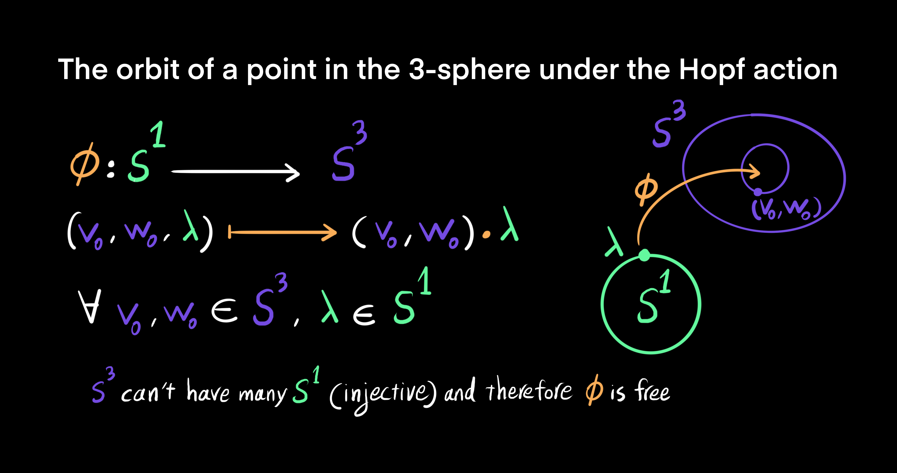  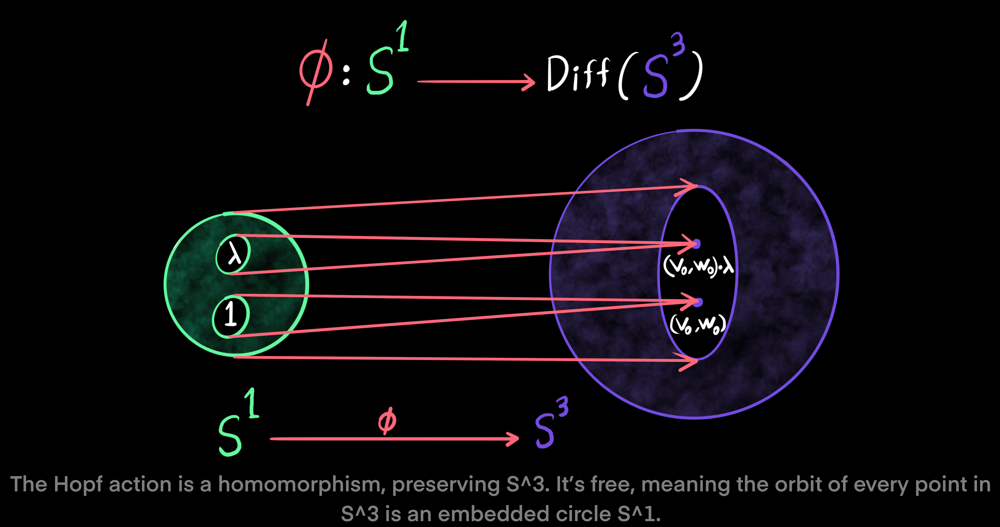
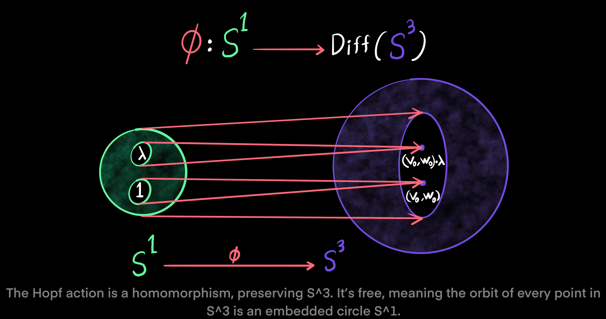
The next idea is about the orbit of a point in the 3-sphere $S^3$ under the Hopf action. The orbit map is defined as $\phi: S^1 \to S^3$ given by $\lambda \mapsto (v_0, w_0) \sdot \lambda$, $\forall (v_0, w_0) \in S^3$. The orbit map $\phi$ is injective and free, meaning that a point in $S^3$ can not have many points in $S^1$ and also there exists an identity element such that the action stabalizes a point in $S^3$ such as $(v_0, w_0)$. Furthermore, the Hopf action $\Phi: S^1 \to Diff(S^3)$ is a homomorphism. It preserves $S^3$. The Hopf action being a free action implies that the orbit of every point $(v_0, w_0) \in S^3$ is an embedded circle $S^1$.
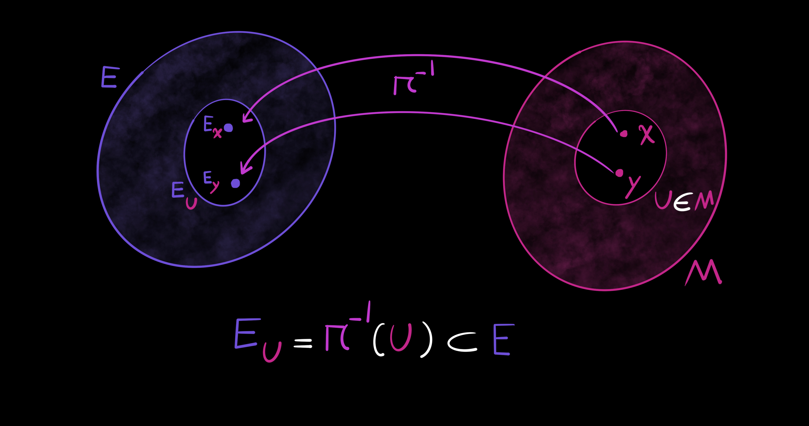 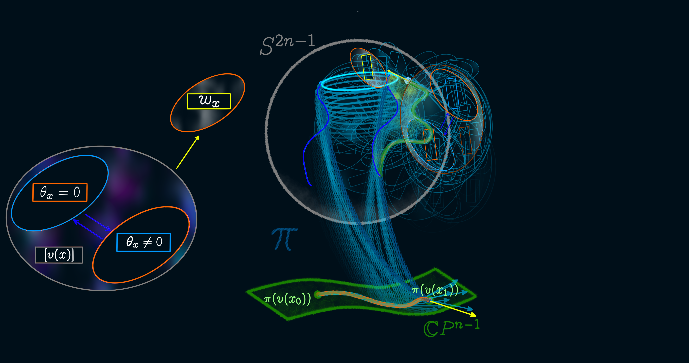 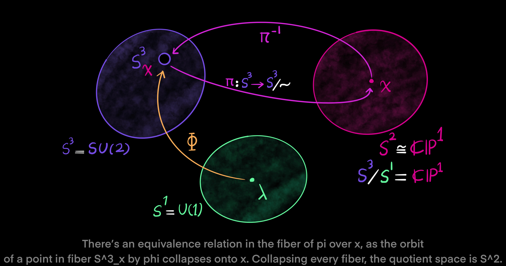
Back to the topic of fiber bundles, we recall that the part of manifold $E$ over subset $U$ equals: $E_U = \pi^{-1}(U) \subset E$, where $U \subset M$. Here, there is an equivalence relation in the fiber $E_x$ of $\pi$ over $x$, since the orbit of a point in fiber $E_x$ by $\phi$ collapses onto a single point $x \in U$ via the projection map $\pi: S^3 \to S^3/\text{\textasciitilde}$. After the collapse of every fiber in manifold $E$, the quotient space $S^3/S^1$ is seen to be the projective complex line $\mathbb{CP}^1 \cong S^2$. The projective complex line is the ratio of two complex numbers. To see how the space of $S^3$ is connected compared to $S^1$, note that every closed loop in $S^3$ is shrinkable to a single point in a continuous way, tracing a local section. However, a closed loop in $S^1$ is not shrinkable to a single point. This fact makes $S^3$ a simply-connected space and $S^1$ a not simply-connected space.
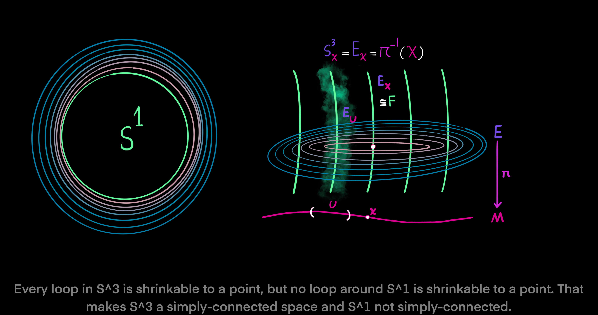 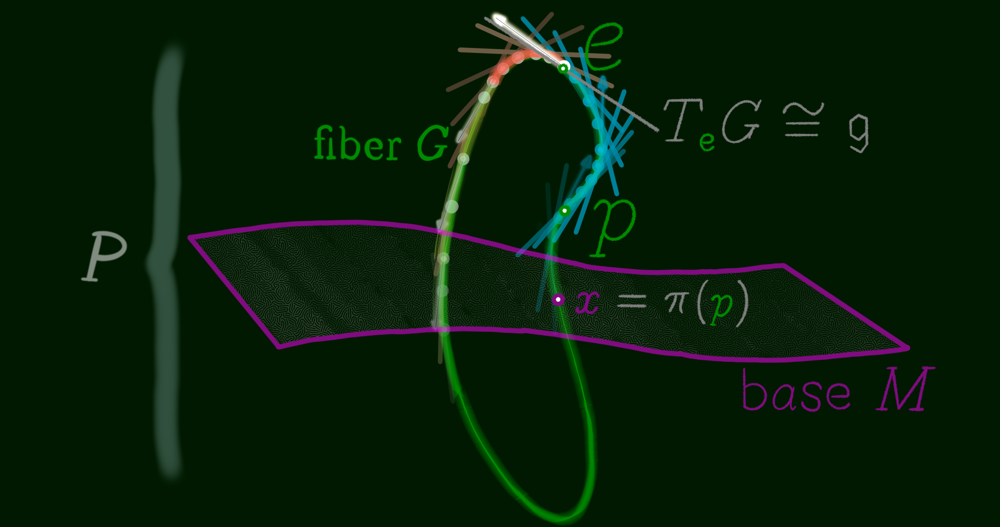 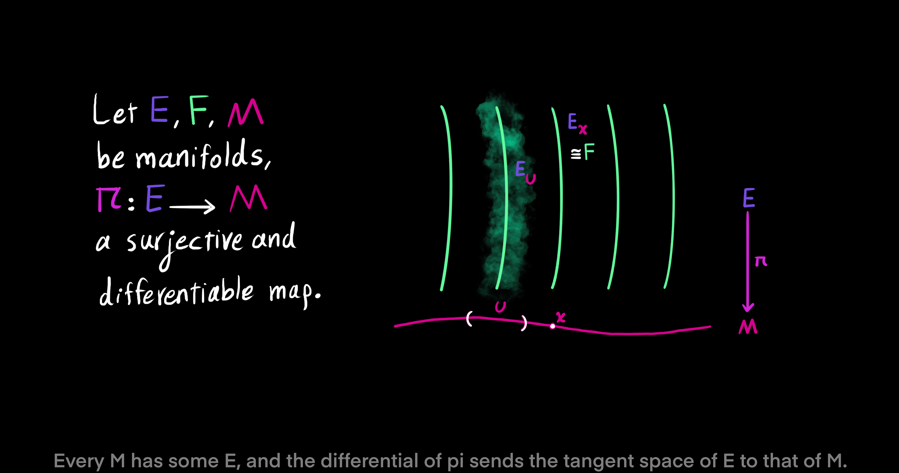
We are now almost equipped with the tools to define a fiber bundle in a formal way. Let $E, F, M$ be manifolds. The projection map $\pi: E \to M$ is a surjective and differentiable map (Every element in $M$ has some element in $E$). Then, $(E, \pi, M, F)$ is called a fiber bundle, (or a locally trivial fibration, or a locally trivial bundle) if for every $x \in M$ there exists an open neighborhood $U \subset M$ around the point $x$ such that the map $\pi$ restricted to $E_U$ can be trivialized as a cross product. Remember that $E_U$ is the part of $E$ of $\pi$ over $U$. In other words, $(E, \pi, M, F)$ is called a fiber bundle if there exists a diffeomorphism $\phi_U: E_U \to U \times F$ such that $pr_1 \ o \ \phi_U = \pi$, meaning the projection onto the first factor of the trivialization map $\phi_U$ is the same as the map $\pi$. Also, a fiber bundle is denoted by $F \to E \xrightarrow{\pi} M$. In this notation, $E$ denotes the total space, $M$ the base manifold, $F$ the general fiber, $\pi$ the projection, and $(U, \phi_U)$ a local trivialization or bundle chart.
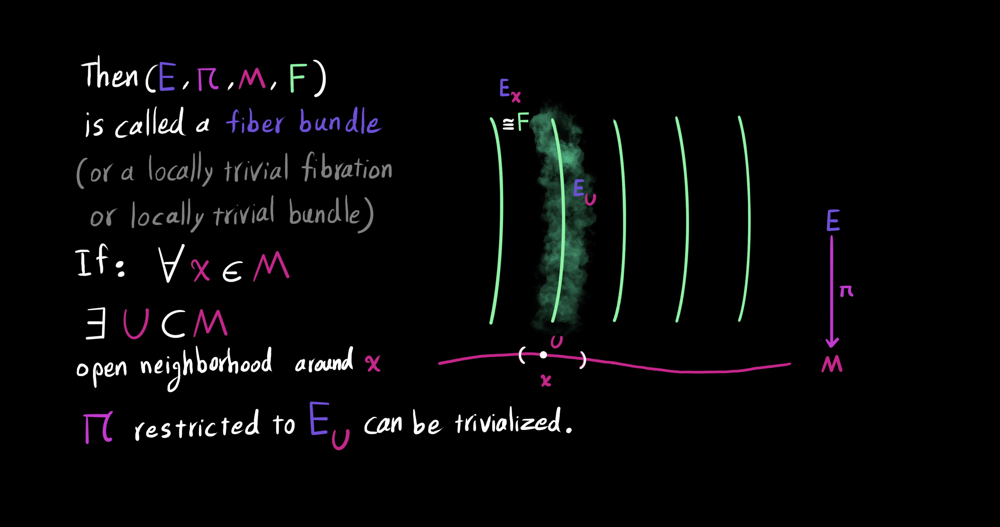 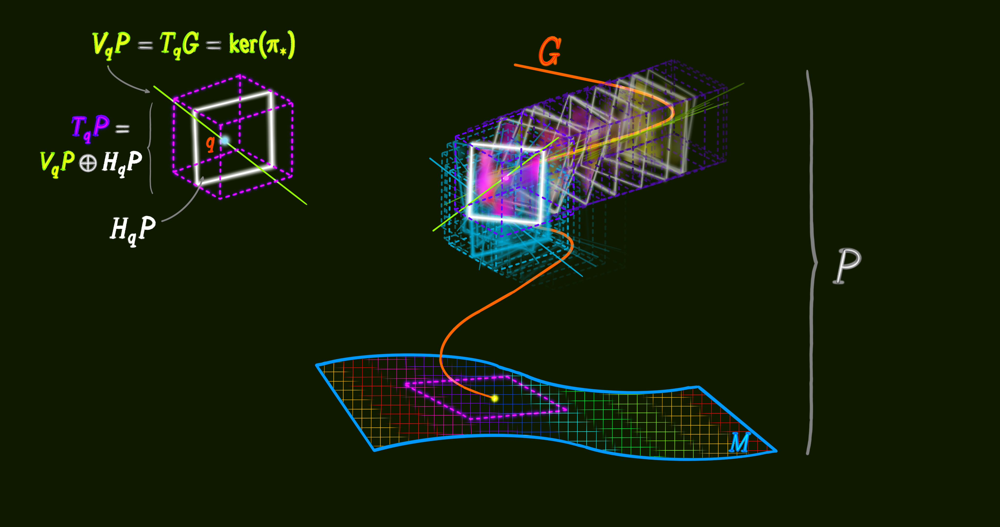 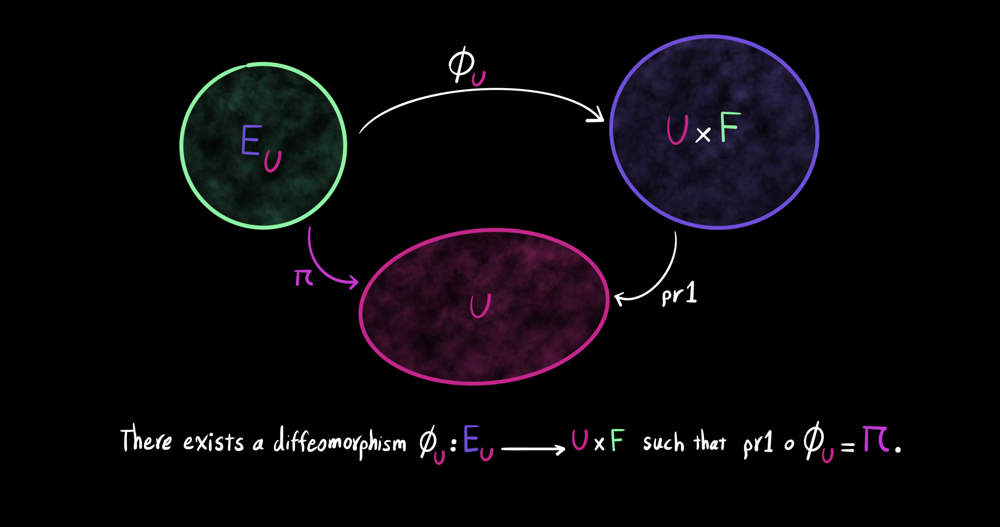
Using a local trivialization $(U, \phi_U): E_x = \pi^{-1}(x)$ we find that the fiber $E_x$ is an embedded submanifold of the total space $E$ for every point $x \in M$. Meaning, the tangent space of fiber $E_x$ is a linear subsapce of the tangent space of $E$. The direct sum of the tangent subspace of the general fiber and the tangent subspace of the base manifold equals the tangent space of the total space: $T_{x}E = V_{x}E \bigoplus H_{x}E$.
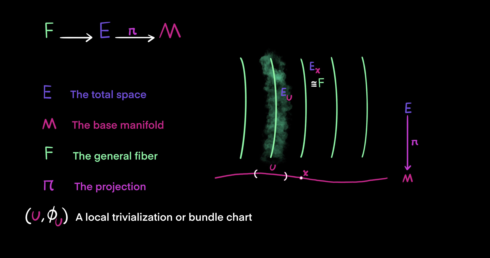 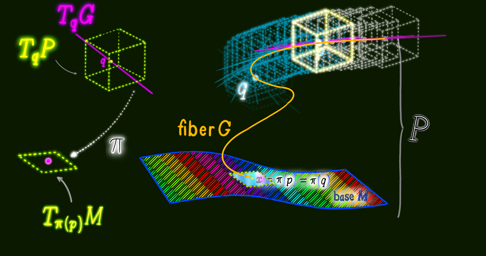 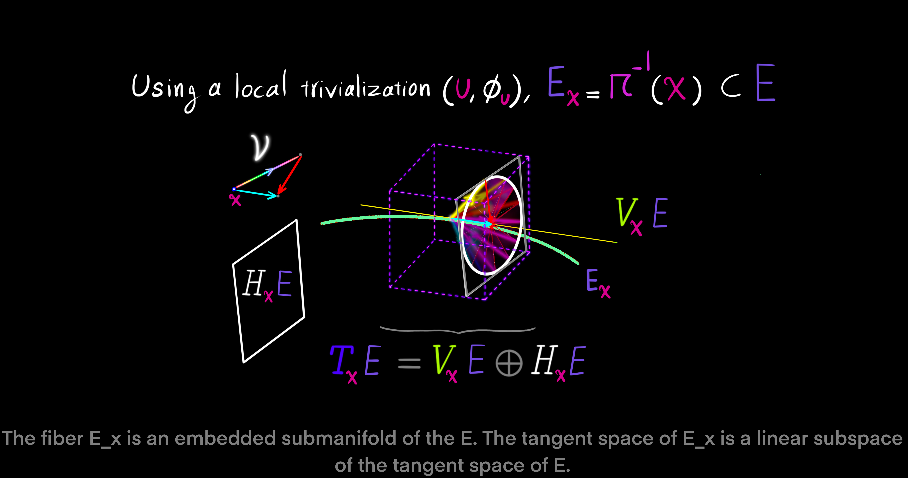
The composition of the local trivialization with the projection onto the second factor gives us yet another useful map between fibers $E_x$ over $x$ and the general fiber $F$. It is a differentiable and invertible map (diffeomorphism) and equals $\phi_U = pr_2 \ o \ \phi_U |_{E_x}: E_x \to F$. Given that the local trivialization $\phi_U: E_U \to U \times F$ is a diffeomorphism (invertible and smooth), the projection $pr_1: U \times F \to U$ onto the first factor of $\phi_U$ is a submersion. That is to say the differntial of $pr_1$ is surjective. $D pr_1: T(U \times F) \to TU$ takes vectors from the tangent space of $U \times F$ into vectors in the tangent space of $U$, such that every element of $TU$ has some element in $T(U \times F)$. As a result, the map $\pi: E \to M$ is also a submersion, which means $D \pi: TE \to TM$ is surjective. Every tangent vector in the codomain $TM$ has some tangent vector in the domain $TE$.
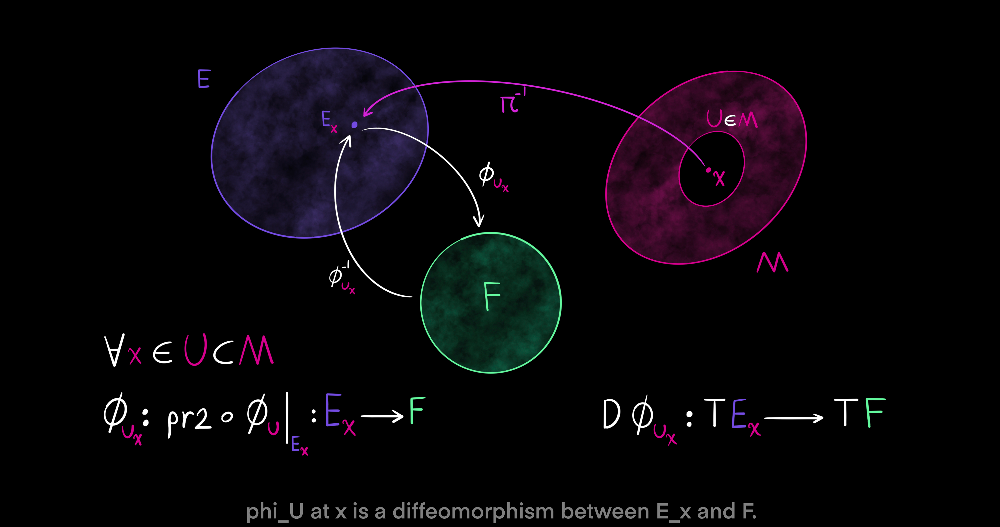 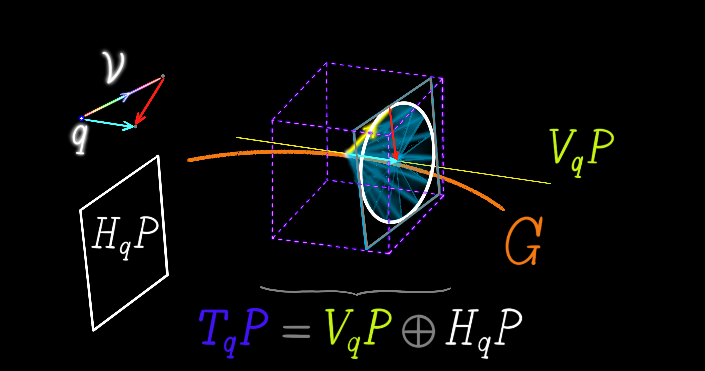 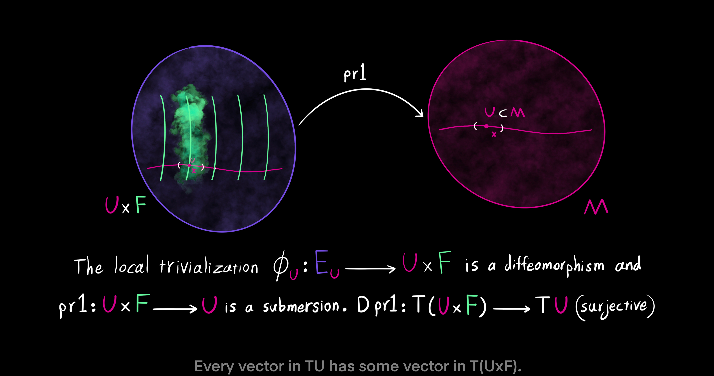
So far, we have established that the bundle projection map, taking points from the total space into points in the base space $\pi: E \to M$, is a submersion. For that reason, the tangent space of the base manifold $M$ is a linear subset of the tangnet space of the total space manifold $E$. Now, we can use the regular value theorem for shining a light on the submersion of $\pi$. Let a point $x \in M$ be a regular value of the smooth map $\pi: E \to M$, and let the fiber $E_x = \pi^{-1}(x)$ be the preimage of the point $x$. Then, the map $\pi^{-1}$ is an embedded submanifold of $E$ of dimension $dim \ E_x = dim \ E - dim \ M$. Meaning, the tangent space of fiber $E_x$ is a linear subspace of the tangent space of $E$. We can verify the result of the theorem for the Hopf bundle $F \to E \xrightarrow{\pi} M$ where $dim \ E = 3$ and $dim \ M = 2$. The regular value theorem implies that the Hopf fiber is one-dimensional, $dim \ E_x = 3 - 2 = 1$, as an embedded submanifold of the total space $E$. With that formal introduction we are going to sketch a visual 3D model next.
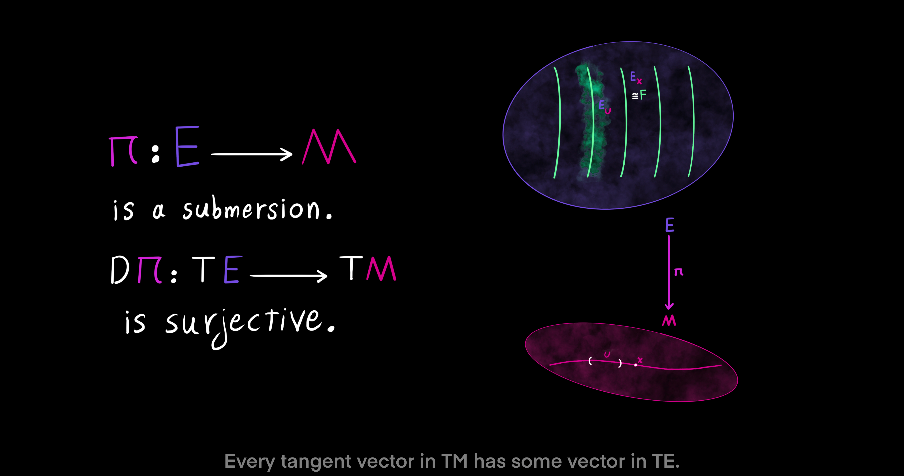 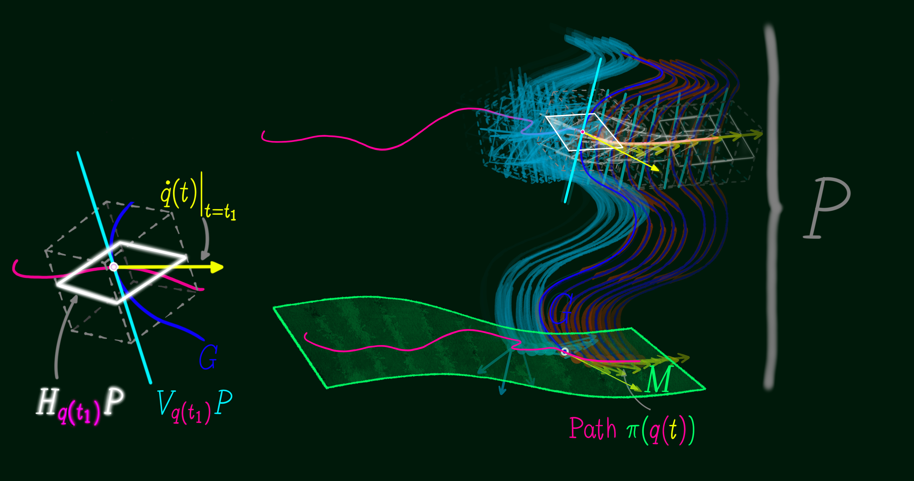 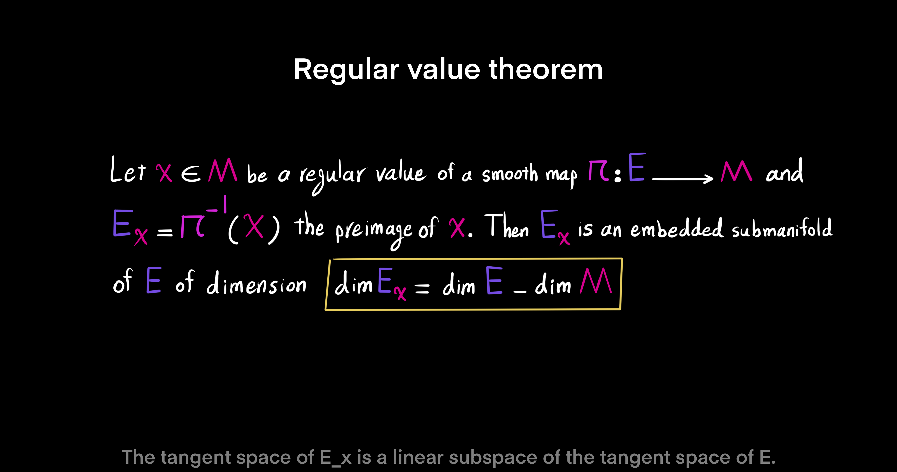 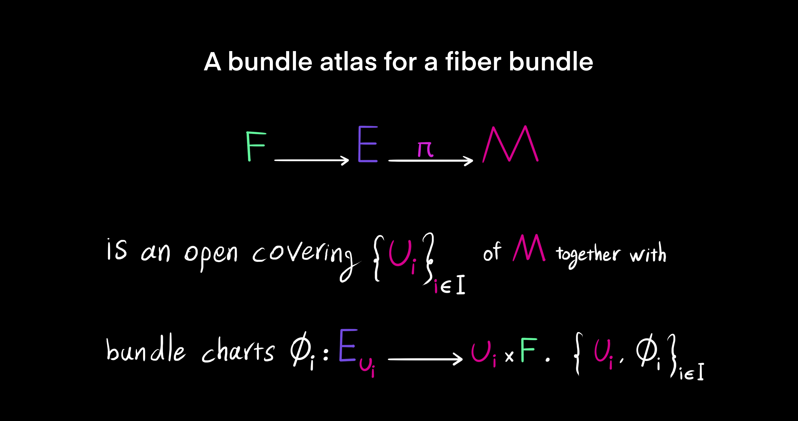
Import the Required Packages
Begin by importing a few software packages for doing algebraic operations, working with files and graphics processing units. Besides Porta, we need to use three packages: FileIO, GLMakie and LinearAlgebra. First, FileIO is the main package for IO and loading all different kind of files, including images and Comma-Separated Value (CSV) files. Second, interactive data visualizations and plotting in Julia are done with GLMakie. Finally, LinearAlgebra, as a module of the Julia programming language, provides array arithmetic, matrix factorizations and other linear algebra related functionality. However, through years of working with geometrical structures and shapes we have encapsulated certain mathematical computations and transformations into custom types and interfaces, which make up most of the functionalities of project Porta. In addition, we wrapped complicated computer graphics workflows inside custom types in order to increase the interoperability of our types with those of external packages such as GLMakie.
import FileIO
import GLMakie
import LinearAlgebra
using PortaSet Hyperparameters
There are essential hyperparameters that determine the complexity of graphics rendering as well as the position and orientation of a camera, through which we render a scene. Since the output of the model is an animation video, we need to set the figure size to 1920 by 1080 to have a full high definition window, in which the scene is located. Most of the shapes and objects that we put inside of the scene are two-dimensional surfaces. Therefore, the segmentation of most shapes requires two integer values for determining how much compute power and resolution we are willing to spend on the animation. Furthermore, the shape of a circle is the most common in our scenes because of the magic of complex numbers. It is known that using 30 segments results in smooth low-polygon circles. So for a two-dimensional sphere a 30 by 30 segmented two-surface should look good. Set the segments equal to 30, and less curvy shapes will look even better in consequence. But, an animation extends through time frame by frame and so we need to set the total number of frames. In this way, specifying the number of frames determines the length of the video. For example, 1440 frames make a one-minute video at 24 frames per second.
figuresize = (1920, 1080)
segments = 30
frames_number = 1440A model means a complicated geometrical shape contained inside a graphical scene. Every model has a name to use as the file name of the output video. Here, we choose the name planethopf as we construct an alternative view of the Planet Hopf by Dror Bar-Natan (2010). Heinz Hopf in 1931 discovered a way to join circles over the skin of the globe. The discovery defines a fiber bundle where the base space is the spherical Earth and the fibers are circles. But, the circles are all mutually parallel and linked. Moreover, the Earth goes through a full rotation about the axis that connect the poles every 24 hours. So it is not surprising that the picture of a non-trivial bundle and the spinning of the base space coordinates (longitudes) makes for a ridiculous geometric shape. But, the surprising fact is that all of it is visualizable as a 3D object. Then, we use a dictionary that maps indices to names in order to keep track of boundary data on the globe and the name of each boundary as a sovereign country.
modelname = "planethopf"
indices = Dict()The Hopf fibration, as a fiber bundle, has an inner product space. The inner product space is symmetric, linear and positive semidefinite. The last property means that the product of a point in the bundle with itself is always non-negative, and it is zero if and only if the point is the zero vector. The abstract inner product space allows us to talk about the length of vectors, the distance between two points and the idea of orthogonality between two vectors. A pair of vectors are orthogonal when they make a right angle with each other and as a consequence their product is equal to zero. For all $u, v, v_1, v_2 \in V$ and $\alpha, \beta \in \R$ the following are the properties of the abstract inner product space:
- Symmetric: $<u, v> = <v, u>$
- Linear: $<u, \alpha v_1 + \beta v_2> = \alpha <u, v_1> + \beta <u, v_2>$
- Positive semidefinite: $<u, u> \geq 0$ for all $u \in V with <u, u> = 0$ if and only if $u = 0$
Now, in order to skin the horizontal cross-sections of the bundle for visualization we need to start with a base point, which is denoted by x. At the tangent space of the base point q, the inner product space (characterized by a connection one-form) splits the tangent space of the bundle $E$ at x into two linear subspaces: horizontal and vertical.
$T_q E = V_q E \bigoplus H_q E$
In terms of the connection, the two subspcaes are orthogonal. A chart is a four-tuple of real numbers to be used as a pair of closed intervals in the horizontal subspace. Then, using the exponential map one can travel in both horizontal and vertical directions and cover the whole bundle within the lengths of the chart intervals. Within the boundary of the chart and with an additional vertical coordinate (a gauge) we can define a tubular neighborhood of the base point q. The first two elements of the four-tuple chart give the interval along the first basis vector and the last two elements give the interval along the second basis vector. As for the third basis vector of the tangent space (the vertical subspace) we use a beginning and an ending gauge.
For the purpose of the construction of the Hopf fibration we define the bundle atlas of a general fiber bundle $F \to E \xrightarrow{\pi} M$ as an open covering $\{U_i\}_{i \in I}$ of the base manifold $M$ together with bundle charts $\phi_i: E_{U_i} \to U_i \times F$. Putting the open covering with bundle charts a bundle atlas is denoted by $\{U_i, \phi_i\}_{i \in I}$. The index $i$ suggests that a bundle atlas should have more than one bundle chart whenever it is a non-trivial bundle (a twisted product rather than a Cartesian product). In order to cover the Hopf bundle we use the exponential matrix function supplied with linear combinations of elements from the Lie algebra $so(4)$, which produces elements in the Lie group $SO(4)$ that push a base point around the 3-sphere. As a side note, a Lie algebra is a vector space $V$ that is equipped with the Lie bracket map $[\sdot, \sdot]: V \times V \to V$, with $[\sdot, \sdot]$ having three properties: bilinear, antisymmetric and satisfies the Jacobi identity. We choose a base point in the 3-sphere $q \in S^3$ and then use Lie algebra elements before exponentiation in order to rotate the 3-sphere to cover every other point in the total space $S^3$ over the chart.
q = Quaternion(ℝ⁴(0.0, 0.0, 1.0, 0.0))
chart = (-π / 4, π / 4, -π / 4, π / 4)Next, we define five scalars in the Lie algebra of $so(2)$, identified with $i\mathbb{R}$, in order to provide different gauge transformations for pullbacks by the Hopf fibration (whirls and base maps). The exponential function takes the gauge values to the unit circle $S^1 = U(1) \cong SO(2)$ given by exp(im * gauge). For creating a clearer view we are going to slice up the Hopf fibers (orbits) and set different values for their respective alpha channels. The names gauge1, gauge2, gauge3, gauge4 and gauge5 are used to provide the Hopf actions when we construct and update the shapes. 0.0 means the trivial action whereas 2π means the full orbit around a Hopf fiber. Looking at the values of these names we can see that a Hopf fiber will be cut into four quarters. We can make some quarters opaque and others see-through for better visibility.
gauge1 = 0.0
gauge2 = π / 2
gauge3 = float(π)
gauge4 = 3π / 2
gauge5 = 2πThe fundamental physics is based on the gauge symmetry of the product $SU(3) \times SU(2) \times U(1)$ and the symmetry of spacetime as a Riemannian manifold $M$ that is equipped with a metric. Therefore, physical laws in nature must be the same under two sets of choices: the choice of gauge transformations and the choice of an inertial reference frame in spacetime. In this model, we understand the choice of the guage symmetry by studying the Hopf action and the choice of an inertial frame in Minkowski space-time by a change-of-basis transformation on the Hopf bundle. The change-of-basis transformation is denoted by matrix M and is applied to the total space of the Hopf bundle via a matrix-vector product. Here, we initialize the matrix M with the idenity.
M = I(4)In order to get the essence of these different choices and integrate them into a visual model we first note that Lorentz transformations of null vectors in the tangent space of spacetime is the same as transforming any other timelike (non-null) vectors. Second, The Hopf bundle of the 3-sphere has a representation in the Lie group $S^3 = SU(2)$ and the Hopf action is represented by actions of $S^1 = U(1)$ as a linear scalar multiplication on the right. But, null vectors have length zero in terms of the Lorentzian metric, whereas the Hopf bundle is made of vectors of unit length in terms of the Euclidean metric. Fortunately, these vectors coincide as unit quaternions and so their transformations can be unified into a single visual model. If we coordinatize a null vector in spacetime as u = 𝕍(T, X, Y, Z) then the corresponding quaternion q = Quaternion(T, X, Y, Z) takes the same coordinates. We assert that u is null and q is of unit norm, with an approximate equality check. The precision of the assertion is given by the name tolerance, which equals 1e-3.
T, X, Y, Z = vec(normalize(ℝ⁴(1.0, 0.0, 1.0, 0.0)))
u = 𝕍(T, X, Y, Z)
q = Quaternion(T, X, Y, Z)
tolerance = 1e-3
@assert(isnull(u, atol = tolerance), "u in not a null vector, $u.")
@assert(isapprox(norm(q), 1, atol = tolerance), "q in not a unit quaternion, $(norm(q)).")The camera is a viewport trough which we see the scene. It is a three-dimensional camera and much like a drone it has six features to help position and orient itself in the scene. Accordingly, a three-vector in the Euclidean 3-space $E^3$ determins its position in the scene, another 3-vector specifies the point at which it looks, and a third vector controls the up direction of the camera. The third 3-vector is needed because the camera can rotate through 360 degrees about the axis that connects its own position to the position of the subject. Using these three 3-vectors we control how far away we are from the subject, and how upright the subject is.
eyeposition = normalize(ℝ³(1.0, 1.0, 1.0)) * π * 0.8
lookat = ℝ³(0.0, 0.0, 0.0)
up = normalize(ℝ³(1.0, 0.0, 0.0))Each of the eyeposition, lookat and up vectors are in the three-real-dimensional vector space ℝ³. The structure of the abstract vector space of ℝ³ includes: associativity of addition, commutativity of addition, the zero vector, the inverse element, distributivity Ι, distributivity ΙΙ, associativity of scalar multiplication, and the unit scalar 1. Also, the product space associated with ℝ³ is symmetric, linear and positive semidefinite (see real3_tests.jl). The same goes for the structure of 4-vectors in ℝ⁴ as we are going to encounter in this model. An abstract vector space $(V, \mathbb{K}, +, .)$ consists of four things:
- A set of vector-like objects $V = \{u, v, ...\}$
- A field $\mathbb{K}$ of scalar numbers, complex numbers, quaternions, or octonions (any one of the division algebras)
- An addition operation $+$ for elements of $V$ that dictates how to add vectors: $u + v$
- A scalar multiplication operator $.$ for scaling a vector by an element of the field
An abstract vector space satisfies eight axioms. For all vectors $u, v, w \in V$ and for all scalars $\alpha, \beta \in \mathbb{K}$ the following properties are true:
- Associativity of addition: $u + (v + w) = (u + v) + w$
- Commutativity of addition: $u + v = v + u$
- There exists a zero vector $0 \in V$ such that $u + 0 = 0 + u = u$
- For every $u$ there exists an inverse element $-u$ such that $u + (-u) = u - u = 0$
- Distributivity I: $\alpha (u + v) = \alpha u + \alpha v$
- Distributivity II: $(\alpha + \beta) u = \alpha u + \beta u$
- Associativity of scalar multiplication: $\alpha (\beta u) = (\alpha \beta) u$
- There exists a unit scalar $1$ such that $1u = u$
Interestingly, if the field $\mathbb{K}$ is an Octonian number then the axiom of the commutativity of addition becomes false. The plan is to first load a geographic data set, then construct a few shapes, and animate a four-stage transformation of the shapes. Model versioning can be applied here using different stages. The transformations are subgroups of the Lorentz transformation in the Minkowski vector space 𝕍, which is a tetrad and origin point away from the Minkowski space-time 𝕄. Both 𝕍 and 𝕄 inherit the properties of the abstract vector space. See minkowskivectorspace_tests.jl and minkowskispacetime_tests.jl for use cases.
totalstages = 4Load the Natural Earth Data
Next, we need to load two image files: an image to be used as a color reference, and another one to be used as surface texture for sections of the Hopf bundle. This is the first example of using FileIO to load image files from hard drive memory. Both images are made with a software called QGIS, which is a geographic information system software that is free and open-source. But, the data comes from Natural Earth Data. Natural Earth is a public domain map dataset available at 1:10m, 1:50m, and 1:110 million scales. Featuring tightly integrated vector and raster data, with Natural Earth you can make a variety of visually pleasing, well-crafted maps with cartography or GIS software. We downloaded the Admin 0 - Countries data file from the 1:10m Cultural Vectors link of the Downloads page. It is a large-scale map that contains geometry nodes and attributes.
reference = FileIO.load("data/basemap_color.png")
mask = FileIO.load("data/basemap_mask.png")As for the image files, we paint the boundaries using the gemometry nodes, and add a grid to be able to visualize distortions of the Euclidean metric of the underlying surface. Therefore, the reference is the clean image from which we pick colors, whereas the mask has a grid and transparency for visualization purposes.
attributespath = "data/naturalearth/geometry-attributes.csv"
nodespath = "data/naturalearth/geometry-nodes.csv"
countries = loadcountries(attributespath, nodespath)The geometry nodes of the data set consist of latitudes and longitudes of boundaries. But, geometry attributes feature various geographical, cultural, economical and geopolitical values. Of these features we only need the names and geographic coordinates. To not limit the use cases of this model, the generic function loadcountries loads all of the data features by supplying it with the file paths of attributes and nodes. Data versioning can be applied here using different file versions. The attributes and nodes files are comma-separated values.
At a high level of description, the process of loading boundary data is as follows: First, we use FileIO to open the attributes file. Second, we put the data in a DataFrames object to have in-memory tabular data. Third, sort the data according to shape identification. Fourth, open the nodes file in a DataFrame. Fifth, group the attributes by the name of each sovereign country. Sixth, determine the number of attribute groups by calling the generic function length. Seventh, define a constant ϵ = 5e-3 to limit the distance between nodes so that the computational complexity becomes more reasonable. Eighth, define a dictionary that has the keys: shapeid, name, gdpmd, gdpyear, economy, partid, and nodes. Finally, for each group of the attributes we extract the data corresponding to the dictionary keys and push them into array values.
Part of the difficulty with the data loading process is that each sovereign country may have more than one connected component (closed boundary). That is why we store part identifications as one of the dictionary keys. In this process, the part with the greatest number of nodes is chosen as the main part and is pushed into the corresponding array value. All of the array values are ordered and have the same length so that indexing over the values of more than one key becomes easier. Once the part ID of each country name is determined, we make a subset of the data frame related to the part ID and then extract the geographic coordinates in terms of latitudes and longitudes. In fact, we make a histogram of each unique part ID and count the number of coordinates. The part ID with the greatest number of coordinates is selected for creating the subset of the data frame. Next, the coordinates are transformed into the Cartesian coordinate system from the Geographic one.
Finally, we decimate a curve containing a sequence of coordinates by removing points from the curve that are farther from each other than the given threshold ϵ. It is a step to make sure that the boundary data has superb quality while managing the size of data for computation complexity. The generic function decimate implements the Ramer–Douglas–Peucker algorithm. It is an iterative end-point fit algorithm suggested by Dror Bar-Natan (2010) for this model. Since a boundary is modelled as a curve of line segments, we set a segmentation limit. But, the decimation process finds a curve that is similar in shape, yet has fewer number of points with the given threshold ϵ. In short, decimate recursively simplifies the segmented curve of a closed boundary if the maximum distance between a pair of consecutive points is greater than ϵ. The distance between two abstract vectors is given by $d(u, v) \equiv ||u - v|| = \sqrt{<(u - v), (u - v)>}$.
boundary_names = ["United States of America", "Antarctica", "Australia", "Iran", "Canada", "Turkey", "New Zealand", "Mexico", "Pakistan", "Russia"]
boundary_nodes = Vector{Vector{ℝ³}}()
for i in eachindex(countries["name"])
for name in boundary_names
if countries["name"][i] == name
push!(boundary_nodes, countries["nodes"][i])
println(name)
indices[name] = length(boundary_nodes)
end
end
endAs the boundary data is massive in number (248 countries) we need to select a subset for visualization. 10 countries selected from a linear space of alphabetically sroted names should be representative of the whole Earth. Then again, using only three distinct points in the 2-sphere one can infer the transformations from the sphere into itself. Also, Antarctica should be added due to its special coordinates at the south pole, to give the user a better sense of how bundle sections are expanded and distorted. As soon as we have the names of the selection, we can proceed with populating the dictionary of indices that relates the name of each country with the corresponding index in boundary data. Using the dictionary we can read the attributes of countries by giving just the name as argument.
points = Vector{Quaternion}[]
for i in eachindex(boundary_nodes)
_points = Quaternion[]
for node in boundary_nodes[i]
r, θ, ϕ = convert_to_geographic(node)
push!(_points, q * Quaternion(exp(ϕ / 4 * K(1) + θ / 2 * K(2))))
end
push!(points, _points)
endWe instantiate a vector of a vector of type Quaternion to store boundary data. The outermost vector contains elements of different countries. But, the innermost vector contains the pullback of the geographic nodes by the Hopf map in the 3-sphere. After conversion to the Geographic coordinate system from the Cartesian coordinates, the points are pulled back by $\pi$ using the statement q * Quaternion(exp(ϕ / 4 * K(1) + θ / 2 * K(2))). It is a right multiplication of the base point q by the exponential function, supplied with the geographic coordinates θ and ϕ. Now that we have the points we can make a 3D scene.
Make a Computer Graphical Scene
Scenes are fundamental building blocks of GLMakie figures. In this model, the layout of the Figure (graphical window) is a single Scene, because we have been able to directly plot all of the information about the bundle geometry and topology inside the same scene. The figure is supplied with the hyperparameter figuresize that we defined earlier. Then, we set a black theme to have black background around the window at the margins. Next, we instantiate a gray point light and a lighter gray ambient light. The lights together with the figure are then passed to LScene to construct our scene. We pass the symbol :white as the argument to the background keyword as it makes for the most visible scene.
makefigure() = GLMakie.Figure(size = figuresize)
fig = GLMakie.with_theme(makefigure, GLMakie.theme_black())
pl = GLMakie.PointLight(GLMakie.Point3f(0), GLMakie.RGBf(0.0862, 0.0862, 0.0862))
al = GLMakie.AmbientLight(GLMakie.RGBf(0.9, 0.9, 0.9))
lscene = GLMakie.LScene(fig[1, 1], show_axis=false, scenekw = (lights = [pl, al], clear=true, backgroundcolor = :white))Construct Base Maps
The base map is the pullback of the skin of the globe $U \subset S^2$ by the Hopf map $\pi: S^3 \to S^2$, representing a local horizontal cross-section of the bundle. The pushforward of horizontal vectors by the Hopf map leaves them unchanged. However, vectors in the vertical subsapce of the tangent space of the Hopf bundle are in the kernel of the Hopf map (they are sent to zero).
We use a 64-bit floating point number to parameterize an element of the Lie algebra $so(2)$, before exponentiating it into an element of the Lie group $SO(2)$ to be used for the orbit map $\phi: S^1 \to S^3$, because a local horizontal cross-section uses the same scalar number for the entirety of subset $U \subset S^2$. The subset $U$ is bounded with a two-dimensional chart. A chart can be thought of as a rectangle whose sides are at most π in length. But, the length of a great circle of the three-dimensional sphere is 2π and the maximum length of chart sides is limited, unless we want to cover $S^3$ twice. To keep things simple, we use one bundle chart and cover a subset $U$ of side length π. The Hopf bundle does not admit a global section. After exponentiating the base point q in horizontal directions for a magnitude beyond π, the orientation of the surface reverses and a sharp twist of the surface happens.
The Hopf bundle is embedded in ℝ⁴, the real-four-dimensional space. The coordinates are defined as unit quaternions where the basis vectors are represented by the symmetry group of the rotations of an orthogonal tetrad, namely $SO(4)$. vectors $u$ and $v$ are orthogonal if and only if their inner product equals zero $<u, v> = 0$. When we talk about Hopf actions and bundle charts, we talk about values that are used to linearly combine elements of the Lie algebra of $so(4)$, vectors in the tangent space of the bundle at point x. Then, we use the matrix exponential map for computing Lie group values in $SO(4)$. Given a fixed gauge, a point in the Lie group stemming from base point x is reconstructed from a Lie algebra element by executing the statement x * Quaternion(exp(θ * K(1) + -ϕ * K(2)) * exp(gauge * K(3))), where scalars θ and ϕ denote the latitude and longitude components in the bundle chart, respectively. K(1) and K(2) denote 4x4 matrices with real elements as basis vectors of the Lie algebra $so(4)$. The tangent space of the bundle at point x spans horizontally with the exponential map of a linear combination of basis vectors K(1) and K(2), whereas it spans vertically in the K(3) direction. This way we get a strictly horizontal section of the bundle in terms of elements of the Lie group $SO(4)$, given a gauge. The elements of $SO(4)$ go on to push the base point x around and end up as observables to be rendered graphically.
lspaceθ = range(chart[1], stop = chart[2], length = segments)
lspaceϕ = range(chart[3], stop = chart[4], length = segments)
[project(normalize(M * (x * Quaternion(exp(θ * K(1) + -ϕ * K(2)) * exp(gauge * K(3)))))) for ϕ in lspaceϕ, θ in lspaceθ]Using the eigendecomposition method LinearAlgebra.eigen, we can compute the matrix M to change the basis of the bundle while keeping the coordinates invariant. So the change-of-basis is the final step of the construction of the observables after using the geographic coordinates and the gauge. Observables.jl allows us to define the points that are to be rendered in the scene, in a way that they can listen to changes dynamically. Later, when we apply transformations to the bundle, including the change-of-basis, the idea is to only change the top-level observables and avoid reconstructing the scene entirely. The change of basis is a bilinear transformation of the tetrad (of Minkowski space-time 𝕄) in ℝ⁴ as a matrix-vector product (M * x for example). Here we denote the transformation as matrix M, which takes a Quaternion number as input and spits out a new number of the same type. The input and output bases must be orthonormal as the numbers must remain unit quaternions after the transformation. Constructing a base map requires a few arguments: the scene object, the base point q, the gauge, the change-of-basis transformation M, the chart, the number of segments of the lattice of observables, the tuxture of the surface and the optional transparency setting. Construct four base maps in order to visualize a more complete picture of the Hopf fibration using four different sections. But, the sections are going to be distinguished from one another and updated with gauge transformations later when we animate them.
basemap1 = Basemap(lscene, q, gauge1, M, chart, segments, mask, transparency = true)
basemap2 = Basemap(lscene, q, gauge2, M, chart, segments, mask, transparency = true)
basemap3 = Basemap(lscene, q, gauge3, M, chart, segments, mask, transparency = true)
basemap4 = Basemap(lscene, q, gauge4, M, chart, segments, mask, transparency = true)Construct Whirls
A Whirl is the shape of a closed boundary in the map of the Earth that is pulled back by the Hopf map $\pi: S^3 \to S^2$. As a reminder, boundaries on the map of the Earth are specified by two real values: latitude θ and longitude ϕ. The boundary of each country in boundary_names is lifted up from the base manifold using the following statement: q * Quaternion(exp(ϕ / 4 * K(1) + θ / 2 * K(2))). The pullback operation is realized by pushing the base point q in a horizontal direction given by coordinates on the surface of the Earth. Then, a gauge transformation is applied by executing the statement x * Quaternion(exp(K(3) * gauge)), with the given scalar gauge in the direction K(3) of the tangent space at point x of the bundle. By varying gauge in a linear space of floating point values, a Whirl (a pullback by the Hopf map) takes a three-dimensional volume. In the special case where gauge is a range of values, starting at zero and stopping at 2π, the Whirl makes a Hopf band. The degree of the twist in the band is directly proportional to the value of gauge. Multiplying x on the right by the exponentiation of K(3) * gauge pushes x in the vertical subspace of the bundle and makes an orbit. Therefore, the orbit map $\phi: S^1 \to S^3$ is given by x[i] * Quaternion(exp(K(3) * gauge).
lspacegauge = range(gauge1, stop = gauge2, length = segments)
[project(normalize(M * (x[i] * Quaternion(exp(K(3) * gauge))))) for i in 1:length(x), gauge in lspacegauge]There are four sets of whirls: some whirls are more solid and some whirls are more transparent. This separation is done to highlight the antipodal points of the three-dimensional sphere $S^3$, given by $x_1^2 + x_2^2 + x_3^2 + x_4^2 = 1$, where $[x_1, x_2, x_3, x_4]^T \in \R^4$. It also helps to visualize the direction of the null plane under transformations of the bundle. Since every pair of points that are infinitestimally close to each other in a horizontal cross-section, defines a differential operator. And Hopf actions, transformations from the bundle into itself change the direction of the operator as it twists. The operator is also called a spin-vector in Minkowski vector space 𝕍. Therefore it can be visualized directly how the operator changes sign by comparing a pullback into $S^3$ at antipodal points of an orbit.
whirls1 = []
whirls2 = []
whirls3 = []
whirls4 = []
for i in eachindex(boundary_nodes)
color1 = getcolor(boundary_nodes[i], reference, 0.1)
color2 = getcolor(boundary_nodes[i], reference, 0.2)
color3 = getcolor(boundary_nodes[i], reference, 0.3)
color4 = getcolor(boundary_nodes[i], reference, 0.4)
whirl1 = Whirl(lscene, points[i], gauge1, gauge2, M, segments, color1, transparency = true)
whirl2 = Whirl(lscene, points[i], gauge2, gauge3, M, segments, color2, transparency = true)
whirl3 = Whirl(lscene, points[i], gauge3, gauge4, M, segments, color3, transparency = true)
whirl4 = Whirl(lscene, points[i], gauge4, gauge5, M, segments, color4, transparency = true)
push!(whirls1, whirl1)
push!(whirls2, whirl2)
push!(whirls3, whirl3)
push!(whirls4, whirl4)
endThe color of a Whirl should match the color of the inside of its own boundary at every horizontal section, also known as a base map. The generic function getcolor finds the correct color to set for the Whirl. It takes as input a closed boundary (a vector of Cartesian points), a color reference image and an alpha channel value to produce an RGBA 4-color. getcolor finds a color according to the following steps: First, it determines the number of points in the given boundary. Second, gets the size of the reference color image as height and width in pixels. Third, converts all of the boundary points to Geographic coordinates. Fourth, finds the minimum and maximum values of the latitudes and longitudes of the boundary. Fifth, creates a two-dimensional linear space (a flat grid or lattice) that ranges within the upper and lower bounds of the latitudes and longitudes. Sixth, finds the Cartesian two-dimensional coordinates of the points in the image space by normalizing the geographic coordinates and multiplying them by the image size. Seventh, picks the color of each grid point with the Cartesian two-dimensional coordinates in the image space as the index. Eighth, Makes a histogram of the colors by counting the number of each color. Finally, sorts the histogram and picks the color with the greatest number of occurance. (See earth.jl from the src directory for implementation.)
However, step seven makes sure that the coordinates in the linear 2-space are inside the closed boundary, otherwise it skips the index and continues with the next index in the grid. In this way we don't pick colors from the boundaries of neighboring countries over the globe. The generic function isinside is used by getcolor to determine whether the given point is inside the given boundary or not. But first, the boundary needs to become a polygon in the Euclidean 2-space of coordinates in terms of latitude and longitude. This is the same as geographic coordinates with the radius of Earth set equal to 1 identically, hence the spherical Earth model of the ancient Greeks. After we make a polygon out of the boundary, the generic function rayintersectseg determines whther a ray cast from a point of the linear grid intersects an edge with the given point p and edge. Here, p is a two-dimensional point and edge is a tuple of such points, representing a line segment. Eventhough this algorithm should work in theory, some boundaries are too small to yield a definite color via getcolor and the color inference algorithm returns a false negative in those cases. So the default color may be white for a limited number of cases out of 248 countries. Once we have the color of the whirls, we can proceed to construct the whirls by supplying the generic function Whirl with the following arguments: the scene object, the boundary points lifetd via an arbitrary section, the first fiber action value (gauge), the second action value, the change-of-basis function M, the number of surface segments, the color and the optional transparency setting.
Compute a Four-Screw
We are going to execute a motion around a closed loop in the Lie group $SL(2, \mathbb{C})$, and then multiply every point in the Hopf bundle by an element of the loop. A four-screw is a subset of the Lie group $SL(n, \mathbb{K}) = \{A \in Mat(n \times n, \mathbb{K}) | det(A) = 1\}$, square matrices of Complex numbers whose volume form (determinant) equals 1. Here, the number $n = 2$ and the field $\mathbb{K} = \mathbb{C}$. A four-screw is a kind of restricted Lorentz transformation where a z-boost and a proper rotation of the celestial sphere are applied. The transformation lives in a four-complex dimensional space and it has six degrees of freedom (the same number of dimensions as $SO(4)$). By parameterizing a four-screw one can control how much boost and rotation a transformation shuld have. Here, w as a positive scalar controls the amount of boost, whereas angle ψ controls the rotation component of the transform. But, the parameterization accepts rapidity as input for the boost. So we take the natural logarithm of w ($log(w) = \phi$) in order to supply the transformer with the required rapidity argument. First, we set w equal to one in order to preserve the scale of the Argand plane and animate the angle ψ through zero to 2π for rotation. The name progress denotes a scalar from zero to one for instantiating a different transformation at each frame of the animation.
if status == 1 # roation
w = 1.0
ϕ = log(w) # rapidity
ψ = progress * 2π
endIn the second case, we fix the rotation angle ψ by setting it to zero, and this time animate the rapidity by changing the value of ϕ at each time step.
if status == 2 # boost
w = max(1e-4, abs(cos(progress * 2π)))
ϕ = log(w) # rapidity
ψ = 0.0
endThird, in order to get a complete picture of a four-screw we animate both rapidity ϕ and rotation ψ, at the same time.
if status == 3 # four-screw
w = max(1e-4, abs(cos(progress * 2π)))
ϕ = log(w) # rapidity
ψ = progress * 2π
endA four-real-dimensional vector in the Minkowski vector space 𝕍 is null if and only if its Lorentz norm is equal to zero. The length or norm of an abstract vector $u \in V$ is equivalent to the square root of the inner product of the vector with itself: $<u, u> \equiv \sqrt{<u, u>} \in \R$. The inner product of vectors $u$ and $v$ in an abstract vector space is given by $u^T * g_{\mu\nu} * v$, where $g_{\mu\nu}$ denotes the metric 2-tensor. However, as an instantiation in Minkowski vector space 𝕍 with signature (+, -, -, -), the matrix $g_{\mu\nu}$ is a diagonal of the form: $g_{\mu\nu} = \begin{bmatrix} 1 & 0 & 0 & 0 \\ 0 & -1 & 0 & 0 \\ 0 & 0 & -1 & 0 \\ 0 & 0 & 0 & -1 \end{bmatrix}$.
Furthermore, a vector in 𝕍 is in the tangent space at some point in Einstein's spacetime, where the metric $g_{\mu\nu}$ will not be diagonal in general. Since a Lorentz transformation of null vectors has the same effect on vectors that are not null, it makes the visualization easier to study transformations on null vectors only. On the other hand, in the Euclidean 4-space $E^4$ the metric $g_{\mu\nu}$ is replaced by identity matrix of dimension four. The null vectors that we use here in the Minkowski vector space have length zero in terms of the Lorentz norm, but have Euclidean norm equal to one, and so they can be regarded as elements of unit Quaternion. Therefore, what we are animating here is the transformation of unit quaternions that represent null vectors.
The change-of-basis transformations that we have used to instantiate Whirl and Basemap types above, can accomodate the effects of a Lorentz transformation. Then, by setting ψ and ϕ we can define a generic function transform to take Quaternion numbers as input and to give us the transformed number as output.
transform(x::Quaternion) = begin
T, X, Y, Z = vec(x)
X̃ = X * cos(ψ) - Y * sin(ψ)
Ỹ = X * sin(ψ) + Y * cos(ψ)
Z̃ = Z * cosh(ϕ) + T * sinh(ϕ)
T̃ = Z * sinh(ϕ) + T * cosh(ϕ)
Quaternion(T̃, X̃, Ỹ, Z̃)
endEvery transformation in an abstract vector space such as the Minkowski vector space 𝕍 has a matrix representation. For constructing the matrix of the transform we just need to compute it four times with basis vectors. The transformation of the basis vectors of unit quaternions by transform are denoted by r₁, r₂, r₃ and r₄. The matrix _M is a four by four real matrix whose rows are r₁ through r₄. _M is the matrix representation of the transformation that is induced by transform.
r₁ = transform(Quaternion(1.0, 0.0, 0.0, 0.0))
r₂ = transform(Quaternion(0.0, 1.0, 0.0, 0.0))
r₃ = transform(Quaternion(0.0, 0.0, 1.0, 0.0))
r₄ = transform(Quaternion(0.0, 0.0, 0.0, 1.0))
_M = reshape([vec(r₁); vec(r₂); vec(r₃); vec(r₄)], (4, 4))But, _M doesn't necessarily take unit quaternions to unit quaternions. By decomposing _M into eigenvalues and eigenvectors we can manipulate the transformation so that it takes unit quaternions to unit quaternions without modifying its effect on the geometrical structure of Argand plane. Despite the fact that _M is a matrix of real numbers, it has complex eigenvalues, as it involves a rotation. By constructing a four-complex-dimensional vector off of the eigenvalues we can normalize _M by normalizing the vector of eigenvalues, before reconstructing a unimodular, unitary transformation (a normal matrix). The reconstructed matrix is called M.
decomposition = LinearAlgebra.eigen(_M)
λ = LinearAlgebra.normalize(decomposition.values) # normalize eigenvalues for a unimodular transformation
Λ = [λ[1] 0.0 0.0 0.0; 0.0 λ[2] 0.0 0.0; 0.0 0.0 λ[3] 0.0; 0.0 0.0 0.0 λ[4]]
M = real.(decomposition.vectors * Λ * LinearAlgebra.inv(decomposition.vectors))We can assert that the transformation that is induced by M takes null vectors to null vectors in Minkowski vector space 𝕍. If that is the case, then the reconstructed transformation M is a faithful representation and it only scales the extent of null vectors rather than null directions, compared to _M. A representation f is called a faithful representation when for different numbers g and q, f(g) and f(q) are equal if and only if g = q.
A spin-vector is based on the space of future or past null directions in Minkowski space-time. The field ζ of a SpinVector represents points in Argand plane. Therefore, if v is obtained with the transformation of u by M, then the respective spin-vectors s and s′ should tell us how M changes Argand plane. To be precise, three different points in Argand plane, namely u₁, u₂, u₃, are needed to characterize the transformation. We assert that the transformation by M induced on Argand plane is correct, because it extends the Argand plane ζ = w * exp(im * ψ) * s.ζ by magnitude w and rotates it through angle ψ. So, we established the fact that normalizing the vector of eigenvalues of the transformation _M and reconstructing it to get M leaves the effect on Argand plane invariant.
u₁ = 𝕍(1.0, 1.0, 0.0, 0.0)
u₂ = 𝕍(1.0, 0.0, 1.0, 0.0)
u₃ = 𝕍(1.0, 0.0, 0.0, 1.0)
for u in [u₁, u₂, u₃]
v = 𝕍(vec(M * Quaternion(u.a)))
@assert(isnull(v, atol = tolerance), "v ∈ 𝕍 in not null, $v.")
s = SpinVector(u)
s′ = SpinVector(v)
if s.ζ == Inf # A Float64 number (the point at infinity)
ζ = s.ζ
else # A Complex number
ζ = w * exp(im * ψ) * s.ζ
end
ζ′ = s′.ζ
if ζ′ == Inf
ζ = real(ζ)
end
@assert(isapprox(ζ, ζ′, atol = tolerance), "The transformation induced on Argand plane is not correct, $ζ != $ζ′.")
endA distinction between coordinates in Argand plane becomes relevant when we want to assert the properties of M on a test variable ζ, without applying M on a control variable ζ′. In the special case where the null direction ζ is the point at infinity, the north pole, we expect for the transformation induced by M to be inconsequential. Because ζ is a union of complex numbers and the singleton of infinity (of type Union{Complex, ComplexF64, Float64}). For an inhomogeneous coordinate system we treat the point at infinity in a different way. For example, for all values of w, if ζ equals infinity then the rotation component of a four-screw should not have any effect on the north pole. But, multiplying positive infinity by a complex number of negative magnitude makes ζ equal to negative infinity, which is not in Argand plane. In that case, we first check the edge case to leave ζ unchanged whenever its value is infinity, ζ = s.ζ. No amount of z-boost and rotation about the z-axis should transform the north pole. Else, ζ transforms as expected: ζ = w * exp(im * ψ) * s.ζ.
Compute a Null Rotation
To understand a null rotation, imagine that you are an astronaut in empty space, far away from any celestial object. Looking at the space around you from every direction, you can see your surrounding environment through a spherical viewport. This view is called the celestial sphere of past null directions, as the light from the stars in the past reach your eyes. A null rotation translates Argand plane such that just one null direction is invariant, the point at infinity (the north pole of the celestial sphere). We control the animation of a null rotation by defining a real number a.
a = sin(progress * 2π)Whenever T is positive, we talk about the sphere of future-pointing null directions. At this stage of the animation, the transformation transform defines a null rotation such that the invariant null vector is the direction t + z, the north pole of the sphere of future-pointing null directions, where ζ equals infinity.
transform(x::Quaternion) = begin
T, X, Y, Z = vec(x)
X̃ = X
Ỹ = Y + a * (T - Z)
Z̃ = Z + a * Y + 0.5 * a^2 * (T - Z)
T̃ = T + a * Y + 0.5 * a^2 * (T - Z)
Quaternion(T̃, X̃, Ỹ, Z̃)
end
r₁ = transform(Quaternion(1.0, 0.0, 0.0, 0.0))
r₂ = transform(Quaternion(0.0, 1.0, 0.0, 0.0))
r₃ = transform(Quaternion(0.0, 0.0, 1.0, 0.0))
r₄ = transform(Quaternion(0.0, 0.0, 0.0, 1.0))
_M = reshape([vec(r₁); vec(r₂); vec(r₃); vec(r₄)], (4, 4))
decomposition = LinearAlgebra.eigen(_M)
λ = decomposition.values
Λ = [λ[1] 0.0 0.0 0.0; 0.0 λ[2] 0.0 0.0; 0.0 0.0 λ[3] 0.0; 0.0 0.0 0.0 λ[4]]
M = real.(decomposition.vectors * Λ * LinearAlgebra.inv(decomposition.vectors))Next, we instantiate another spin-vector using M * u = v in order to examine the effect of the transformation M on Argand plane. Specifically, the point ζ from the Argand plane of u transforms into α * s.ζ + β, where α determines the extension of Argand plane and β the translation. The scalar a controls the translation of the plane because β is defined as β = Complex(im * a). We assert that the transformation induced on Argand plane is correct by comparing the approximate equality of the Argand plane of v and the Argand plane of u. Similar to previous animation stages, the induced transformation on Argand plane by M is completely characterized using three different points: u₁, u₂, u₃. After transforming u by M we assert that the result v is still a null vector.
u₁ = 𝕍(1.0, 1.0, 0.0, 0.0)
u₂ = 𝕍(1.0, 0.0, 1.0, 0.0)
u₃ = 𝕍(1.0, 0.0, 0.0, 1.0)
for u in [u₁, u₂, u₃]
v = 𝕍(vec(M * Quaternion(u.a)))
@assert(isnull(v, atol = tolerance), "v ∈ 𝕍 in not a null vector, $v.")
s = SpinVector(u) # TODO: visualize the spin-vectors as frames on S⁺
s′ = SpinVector(v)
β = Complex(im * a)
α = 1.0
ζ = α * s.ζ + β
ζ′ = s′.ζ
if ζ′ == Inf
ζ = real(ζ)
end
@assert(isapprox(ζ, ζ′, atol = tolerance), "The transformation induced on Argand plane is not correct, $ζ != $ζ′.")
endFinally, we also assert that the null direction z + t is invariant under the transformation M because it is a null rotation with a fixed null direction at the north pole. The animation of a null rotation is correct if all of the assertions evaluate true.
v₁ = 𝕍(normalize(ℝ⁴(1.0, 0.0, 0.0, 1.0)))
v₂ = 𝕍(vec(M * Quaternion(vec(v₁))))
@assert(isnull(v₁, atol = tolerance), "vector t + z in not null, $v₁.")
@assert(isapprox(v₁, v₂, atol = tolerance), "The null vector t + z is not invariant under the null rotation, $v₁ != $v₂.")Update the Camera
The 3D camera of the scene requires the eye position, look at, and up vectors for positioning and orientation. The function update_cam! takes the scene object along with the three required vectors as arguments and updates the camera. But, our camera position and orientation vectors are of type ℝ³, and not Vec3f. To match the argument type we need to use the generic function vec and the splat operator in order to instantiate objects of type Vec3f, because update_cam! is going to match the given type with its own signature.
GLMakie.update_cam!(lscene.scene, GLMakie.Vec3f(vec(eyeposition)...), GLMakie.Vec3f(vec(lookat)...), GLMakie.Vec3f(vec(up)...))Record an Animation
Updating the base maps requires a base point in the section denoted by q and the transformation M. Then, we use M to update base maps 1, 2, 3 and 4. For we want to have different choices of an inertial reference frame in the tangent space of some point in spacetime. The generic function update! updates base maps by changing the structurally embedded observables, and then the graphical shapes take different forms accordingly.
Although we are talking about points in the bundle, embedded in ℝ⁴ and of type Quaternion, the generic function project converts them to points in ℝ³. The one method of project takes the given point q ∈ S³ ⊂ ℂ² and turns it into a point in the Euclidean space E³ ⊂ ℝ³ using stereographic projection. We identify $\mathbb{R}^4 \to \mathbb{C}^2$ given by $(x_1, x_2, x_3, x_4) \mapsto (x_1 + i x_2, x_3 + i x_4)$. Then, the stereographic projection is given by: $project: S^3 \setminus {(1, 0)} \to \mathbb{R}^3$ given by $(x_1, x_2, x_3, x_4) \mapsto \frac{[x_2, x_3, x_4]^T}{1 - x_1}$.
Whenever we call the update! function with an object like basemap1, giving transformation M, two things happn under the hood for deforming the graphics (update!(basemap1, q, gauge1, M)). First, a matrix of type ℝ³ is made, Matrix{ℝ³}. That is the job of one of the methods of the generic function make. The correct dispatch is selected automatically for the job, based on the argument signature (whether the first argument is of type Whirl or Basemap for example). The selected method makes a 2-surface (lattice) of the horizontal section at base point q after transforming by M, with the given segments number, gauge and chart. A chart and a gauge play the role of a choice of local trivialization of the Hopf bundle, as an atlas, for the purpose of constructing a pullback of the Earth's surface.
Second, the matrix of ℝ³ along with the given basemap's observables are passed to the function updatesurface! for updating the observables. For each coordinate component x, y and z in the Euclidean 3-space $E^3$, there is a corresponding matrix of real numbers, of the same size: (segments by segments). In the type structure of a Basemap or a Whirl there is a tuple whose elements are of type Observable. Each element of the three-tuple in turn contains a matrix of components x, y or z. Reshaping a matrix of 3-vectors into three matrices of scalars is done because when we implicitly instantiated a GLMakie surface in the beginning, we supplied it with three observables representing x, y and z coordinates separately. The generic function buildsurface from the source file surface.jl builds a surface with the given scene, value, color and transparency. Here, the value argument is of type Matrix{ℝ³}. The interface between the construction of our base maps (or whirls) and the graphics engine is essentially a reshaping and type conversion. See surface_tests.jl for use cases.
Every time we update the observables of a Whirl under transformation by M, we need to access the coordinates of the boundary data (update!(whirls1[i], points[i], gauge1, gauge2, M)). But the coordinates are not changed, and instead the change-of-basis is taken care of by the map M. The coordinate component ϕ is divided by a factor of four since in geographic coordinates longitudes range from -π to +π, whereas latitudes range from -π / 2 to +π / 2 (exp(ϕ / 4 * K(1) + θ / 2 * K(2)))). This division rescales the longitude component of coordinates and allows us to have a square bundle chart, compared to coordinate components θ. Rescaling θ and ϕ aligns the boundaries of horizontal and vertical subspaces. We finish the animation of one time-step after updating the last Whirl.
The function animate takes as input an integer called frame and updates the scene observables according to the stages that we described earlier. First, it calculates the progress of the animation frames, dividing frame by frames_number. For different properties of Lorentz transformations we have four stages, each stage having its own progress. The signature of the four-screw animator function is compute_fourscrew(progress::Float64, status::Int). For example, stage one animates a proper rotation of Argand plane by calling the function compute_fourscrew with status equal to 1. Stage 2 animates a pure z-boost. Then, stage 3 animates a four-screw. Finally, stage 4 animates a null rotation by calling the function compute_nullrotation. After calling each stage function, we update the camera by calling the function updatecamera.
animate(frame::Int) = begin
progress = frame / frames_number
stage = min(totalstages - 1, Int(floor(totalstages * progress))) + 1
stageprogress = totalstages * (progress - (stage - 1) * 1.0 / totalstages)
println("Frame: $frame, Stage: $stage, Total Stages: $totalstages, Progress: $stageprogress")
if stage == 1
M = compute_fourscrew(stageprogress, 1)
elseif stage == 2
M = compute_fourscrew(stageprogress, 2)
elseif stage == 3
M = compute_fourscrew(stageprogress, 3)
elseif stage == 4
M = compute_nullrotation(stageprogress)
end
update!(basemap1, q, gauge1, M)
update!(basemap2, q, gauge2, M)
update!(basemap3, q, gauge3, M)
update!(basemap4, q, gauge4, M)
for i in eachindex(whirls1)
update!(whirls1[i], points[i], gauge1, gauge2, M)
update!(whirls2[i], points[i], gauge2, gauge3, M)
update!(whirls3[i], points[i], gauge3, gauge4, M)
update!(whirls4[i], points[i], gauge4, gauge5, M)
end
updatecamera()
endTo create an animation you need to use the record function. In summary, we instantiated a Scene inside a Figure. Next, we created and animated observables in the scene, on a frame by frame basis. Now, we record the scene by passing the figure fig, the file path of the resulting video, and the range of frame numbers to the record function. The frame is incremented by record and the frame number is passed to the function write to animate the observables. Once the frame number reaches the total number of animation frames, recording is finished and a video file is saved on the hard drive at the file path: gallery/planethopf.mp4.
GLMakie.record(fig, joinpath("gallery", "$modelname.mp4"), 1:frames_number) do frame
animate(frame)
end